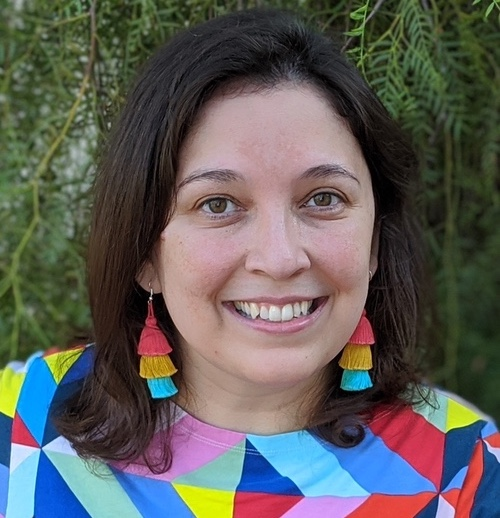
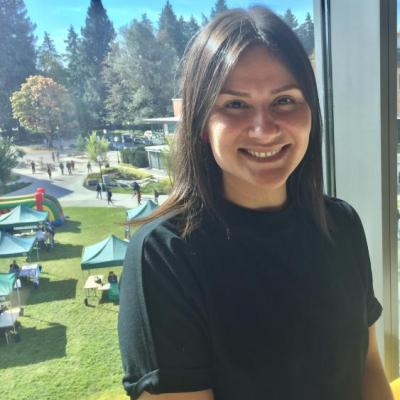
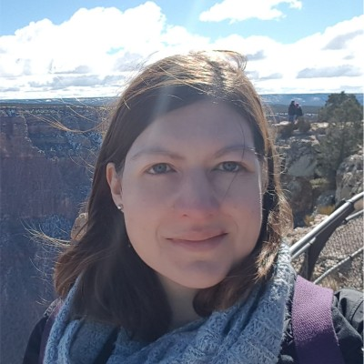
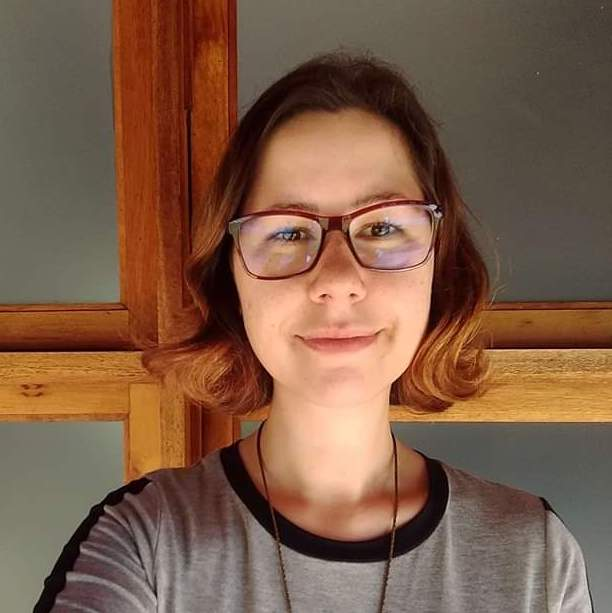
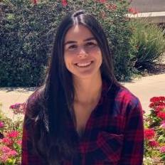
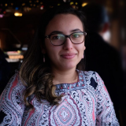
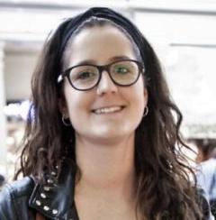

Adriana Picoral (PhD) is an assistant professor in data science at the University of Arizona's School of Information. She holds a BsC in Computer Science, a master's in TESOL, and a PhD in applied linguistics (SLAT). Her main areas of research are data science, corpus linguistics, and computational linguistics.
Group of Inter-institutional Research in Languages
Group of Inter-institutional Research in Languages (GIRL) is a group of women scholars in linguistics, applied linguistics, corpus linguistics, and computational linguistics.
Our group was founded in summer 2020, and connects researchers in different countries, including the United States, Brazil, and Ireland. We focus primarily in Portuguese, Spanish and English, but we also work with other languages.
Applications
Presentations
- Centanin Bertho, M., Picoral, A., Calafate de Barros, I., Carcamo-Garcia, M., & Zuppardi, M. C. (2021). Pronominal system variation: What can we learn from Twitter data?. American Association for Applied Linguistics.
- Lívio, C., Sommer-Farias, B., Marchioro Stumpf, E., Goulart, L., & Picoral, A. (2021). Investigating pronominal variation using Twitter data: advantages, challenges, and lessons learned. American Association for Applied Linguistics.
About Us

Bruna Sommer Farias (PhD) is an assistant professor at Michigan State University. Before her doctoral studies, she contributed considerably PPE, a program in Portuguese as a foreign language at Universidade Federal do Rio Grande do Sul, by designing courses, training teachers, and implementing a program evaluation. She holds a PhD in applied linguistics (SLAT), with her dissertation focusin on the ways that genre-based writing instruction in an additional language can also benefit writers in their first language.

Camila lívio is a PhD candidate in Romance Languages (Linguistics) at UGA. She earned a MA degree in Language Studies from the Universidade Estadual de Londrina, in Brazil, and served as a Fulbright Fellow at the University of Pennsylvania before coming to Athens. Her academic interests include language variation and change, computational and corpus linguistics, and finite-state systems as they apply to Romance languages and language learning.
Camila Mombach is a project lead for linguist analysts working with voice recognition software at GlobeTech, in Ireland. She holds a master's degree in aplied linguistics from University College Cork, and a bachelor's in Communication and Media Studies from Pontifícia Universidade Católica do Rio Grande do Sul. Her main areas of research are applied linguistiscs and computational linguistics.

Carolina Zuppardi (PhD) is a manager of digital learning academic quality for Laureate Internatioal Universities, in Brazil. She holds a PhD in applied linguistics from Pontifícia Universidade Católica de São Paulo. She was a visiting student tesearcher at Northern Arizona University, under a Fulbright Doctoral Dissertation Research Award. Her research interests are Corpus Linguistics, with a focus on studies related to language variation and English for professional/academic settings.

Elisa Stumpf (PhD) is an assistant professor in Portuguese as an additional language at Universidade Federal de Pelotas. She holds a doctoral and a master's degrees in applied linguistics and languages from Universidade Federal do Rio Grande do Sul. She taught Portuguese as a Fulbright Language Teaching Assistant (FLTA) at California State University. Her research focus is on the relationship between language and culture, euphemisms, interculturality, and language teaching for specific/academic purposes.

Isabella Calafate de Barros is PhD student in hispanic linguistics and a Graduate Teaching Associate in the Department of Spanish and Portuguese at the University of Arizona. Her main research interests are in the fields of sociolinguistics and language contact, with an emphasis on U.S. Spanish. She has been working more specifically with language variation and change (morphosyntactic variation), language contact phenomena, and also the incorporation of Sociolinguistics within the field of Heritage Language Pedagogy. She holds a BA in languages (Portuguese and Spanish) and a master's in Hispanic Linguistics degrees, both from the Universidade Federal do Rio de Janeiro.

Larissa Goulart is a PhD candidate in Applied Linguistics at Northern Arizona University. Before starting her doctoral studies, she taught Portuguese as a Fulbright Language Teaching Assistant (FLTA) at the University of Nebraska, Lincoln. She holds a MA in English Language Teaching with a focus on English for Specific Purposes from the University of Warwick, UK. Her research interests include corpus linguistics applications to language teaching and second language writing for university purposes.
Mariana Centanin Bertho is a PhD student in Second Language Acquisition and Teaching (SLAT) at the University of Arizona. Before starting her doctoral studies, she was a Fulbright Language Teaching Assistant (FLTA) of Portuguese also at the University of Arizona. She holds a masters and a bachelor's degrees in linguistics and Portuguese from Universidade Estadual Paulista Júlio de Mesquita Filho. Her research focuses on phonological acquisition of English and Portuguese as a foreign languages.

Marina Carcamo Garcia is PhD student in hispanic linguistics and a Graduate Teaching Associate in the Department of Spanish and Portuguese at the University of Arizona. Her main research interests are sociolinguistics (code-switching, language contact phenomena, language variation and change, language attitudes), cognate languages, translation and interpretation studies, bi- and multilingualism and second language acquisition and teaching. She holds a BA in Translation and Interpreting (English, French, Catalan and Spanish) and an Erasmus Mundus Master's Degree in Learning and Teaching of Spanish in Multilingual and International Contexts from University of Deusto (Bilbao, Spain) together with a consortium of international universities.
Marine Laísa Matte is a PhD student in applied linguistics at Universidade Federal do Rio Grande do Sul. She holds a master's in applied linguistics and a BA in languages (Portuguese and English) also from Universidade Federal do Rio Grande do Sul. She's an adjunct professor in applied linguistics at Universidade do Vale do Taquari. Her research interests include corpus linguistics, English for academic purposes and second language writing.